fastmath.random
Various random and noise functions.
Namespace defines various random number generators (RNGs), different types of random functions, sequence generators and noise functions.
RNGs
You can use a selection of various RNGs defined in Apache Commons Math library.
Currently supported RNGs:
:jdk- default java.util.Random:mersenne- MersenneTwister:isaac- ISAAC:well512a,:well1024a,:well19937a,:well19937c,:well44497a,:well44497b- several WELL variants
To create your RNG use rng multimethod. Pass RNG name and (optional) seed. Returned RNG is equipped with RNGProto protocol with methods: irandom, lrandom, frandom drandom, grandom, brandom which return random primitive value with given RNG.
(let [rng (rng :isaac 1337)]
(irandom rng))
For conveniency default RNG (:jdk) with following functions are created: irand, lrand, frand, drand, grand, brand.
Each prefix denotes returned type:
- i - int
- l - long
- f - float
- d - double
- g - gaussian (double)
- b - boolean
Check individual function for parameters description.
Random Vector Sequences
Couple of functions to generate sequences of numbers or vectors.
To create generator call sequence-generator with generator name and vector size. Following generators are available:
:halton- Halton low-discrepancy sequence; range 0,1:sobol- Sobol low-discrepancy sequence; range 0,1:r2- R2 low-discrepancy sequence; range 0,1, more…:sphere- uniformly random distributed on unit sphere:ball- uniformly random distributed from unit ball:gaussian- gaussian distributed (mean=0, stddev=1):default- uniformly random; range:0,1
:halton, :sobol and :r2 can be also randomly jittered according to this article. Call jittered-sequence-generator.
After creation you get lazy sequence
Noise
List of continuous noise functions (1d, 2d and 3d):
:value- value noise:gradient- gradient noise (improved Ken Perlin version):simplex- simplex noise
First two (:value and :gradient) can use 4 different interpolation types: :none, :linear, :hermite (cubic) and :quintic.
All can be combined in following variants:
- Noise - pure noise value, create with single-noise
- FBM - fractal brownian motion, create with fbm-noise
- Billow - billow noise, billow-noise
- RidgedMulti - ridged multi, ridgedmulti-noise
Noise creation requires detailed configuration which is simple map of following keys:
:seed- seed as integer:noise-type- type of noise::value,:gradient(default),:simplex:interpolation- type of interpolation (for value and gradient)::none,:linear,:hermite(default) or:quintic:octaves- number of octaves for combined noise (like FBM), default: 6:lacunarity- scaling factor for combined noise, default: 2.00:gain- amplitude scaling factor for combined noise, default: 0.5:normalize?- should be normalized to[0,1]range (true, default) or to[-1,1]range (false)
For usage convenience 3 ready to use functions are prepared. Returning value from [0,1] range:
- noise - Perlin Noise (gradient noise, 6 octaves, quintic interpolation)
- vnoise - Value Noise (as in Processing, 6 octaves, hermite interpolation)
- simplex - Simplex Noise (6 octaves)
For random noise generation you can use random-noise-cfg and random-noise-fn. Both can be feed with configuration. Additional configuration:
:generatorcan be set to one of the noise variants, defaults to:fbm:warp-scale- 0.0 - do not warp, >0.0 warp:warp-depth- depth for warp (default 1.0, if warp-scale is positive)
Discrete Noise
discrete-noise is a 1d or 2d hash function for given integers. Returns double from [0,1] range.
Distribution
Various real and integer distributions. See DistributionProto and RNGProto for functions.
To create distribution call distribution multimethod with name as a keyword and map as parameters.
Categories
Other vars: ->seq ball-random billow-noise brand brandom ccdf cdf continuous? covariance default-normal default-rng dimensions discrete-noise distribution distribution-id distribution-parameters distribution? distributions-list drand drandom fbm-noise flip flipb frand frandom grand grandom icdf integrate-pdf irand irandom jittered-sequence-generator likelihood log-likelihood lower-bound lpdf lrand lrandom mean means noise noise-generators noise-interpolations noise-types observe observe1 pdf probability random-noise-cfg random-noise-fn randval ridgedmulti-noise rng rngs-list sample sequence-generator sequence-generators-list set-seed set-seed! simplex single-noise source-object synced-rng upper-bound variance vnoise warp-noise-fn
->seq
(->seq)(->seq rng)(->seq rng n)(->seq rng n sampling-method)Returns lazy sequence of random samples (can be limited to optional n values).
Additionally one of the sampling methods can be provided, ie: :uniform, :antithetic, :systematic and :stratified.
Examples
Sequence of random values from distribution
(->seq (distribution :gamma) 5)
;;=> (9.338595251977102
;;=> 0.6447322934022234
;;=> 2.9546608203555897
;;=> 2.1361644933461856
;;=> 2.179096738777491)
(->seq (distribution :gamma) 5 :stratified)
;;=> (0.538681218505258
;;=> 1.815596109861234
;;=> 2.9298789111516337
;;=> 4.278478844027326
;;=> 6.424227045822081)
(->seq default-rng 5 :systematic)
;;=> (0.16669543910984297
;;=> 0.366695439109843
;;=> 0.566695439109843
;;=> 0.7666954391098431
;;=> 0.9666954391098429)billow-noise
(billow-noise)(billow-noise cfg__20703__auto__)Create billow-noise function with optional configuration.
Examples
Usage
(let [n (billow-noise {:seed 12345, :interpolation :none})]
(n 0.5 1.1 -1.3))
;;=> 0.16031746031746036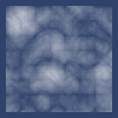2d noise
brand
Random boolean with default RNG.
Returns true or false with equal probability. You can set p probability for true
Examples
Usage
(brand)
;;=> true
(brand 0.1)
;;=> falseCount number of
truevalues with probability 0.15
(count (filter true? (repeatedly 100000 (fn* [] (brand 0.15)))))
;;=> 14901brandom
(brandom rng)(brandom rng p)Random boolean with provided RNG
Examples
boolean
(rngproto-snippet brandom ...)
;;=> truecdf
(cdf d v)(cdf d v1 v2)Cumulative probability.
Examples
Usage
(cdf (distribution :gamma) 1)
;;=> 0.09020401043104985
(cdf (distribution :gamma) 1 4)
;;=> 0.5037901398591113continuous?
(continuous? d)Does distribution support continuous domain?
Examples
Usage
(continuous? (distribution :gamma))
;;=> true
(continuous? (distribution :pascal))
;;=> false
;; Test: ok.covariance
(covariance d)Distribution covariance matrix (for multivariate distributions)
Examples
Usage
(covariance (distribution :multi-normal))
;;=> ((1.0 0.0) (0.0 1.0))
(covariance (distribution :dirichlet {:alpha [2 2]}))
;;=> [[0.05 -0.05] [-0.05 0.05]]
;; Test: ok.default-normal
Default normal distribution (u=0.0, sigma=1.0).
Examples
Usage
(sample default-normal)
;;=> 1.444215875679369
(set-seed! default-normal 1234)
;;=> org.apache.commons.math3.distribution.NormalDistribution@7a4204ef
(sample default-normal)
;;=> 0.14115907833078006
(irandom default-normal)
;;=> 0
(mean default-normal)
;;=> 0.0
(variance default-normal)
;;=> 1.0default-rng
Default RNG - JDK
Examples
Usage
(set-seed! default-rng 111)
;;=> org.apache.commons.math3.random.JDKRandomGenerator@74b6c343
(irandom default-rng)
;;=> -1196652709
(set-seed! default-rng 999)
;;=> org.apache.commons.math3.random.JDKRandomGenerator@74b6c343
(irandom default-rng)
;;=> -1242822577
(set-seed! default-rng 111)
;;=> org.apache.commons.math3.random.JDKRandomGenerator@74b6c343
(irandom default-rng)
;;=> -1196652709dimensions
(dimensions d)Distribution dimensionality
Examples
Usage
(dimensions (distribution :gamma))
;;=> 1
(dimensions (distribution :dirichlet {:alpha (repeat 30 2.0)}))
;;=> 30
;; Test: ok.discrete-noise
(discrete-noise X Y)(discrete-noise X)Examples
Example calls
(discrete-noise 123 444)
;;=> 0.8660251823561383
(discrete-noise 123 444)
;;=> 0.8660251823561383
(discrete-noise 123 445)
;;=> 0.4702831345937602
(discrete-noise 123)
;;=> 0.28831296287864117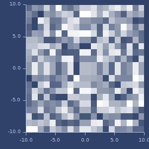Draw noise for 0-180 range.
distribution
multimethod
Create distribution object.
- First parameter is distribution as a
:key. - Second parameter is a map with configuration.
All distributions accept rng under :rng key (default: default-rng) and some of them accept inverse-cumm-accuracy (default set to 1e-9).
Examples
Usage
(distribution :beta)
;;=> org.apache.commons.math3.distribution.BetaDistribution@6692accf
(distribution :beta {:alpha 1.0, :beta 1.0})
;;=> org.apache.commons.math3.distribution.BetaDistribution@51ada4edAll parameters
(into (sorted-map)
(map (fn* [p1__32715#]
(vector p1__32715#
(sort (distribution-parameters (distribution
p1__32715#)))))
(keys (methods distribution))))
;;=> {:anderson-darling ({:n 1.0}),
;;=> :bb (:bd :mu :sigma),
;;=> :bernoulli (:p :trials),
;;=> :beta (:alpha :beta),
;;=> :binomial (:p :trials),
;;=> :categorical-distribution (:data :probabilities),
;;=> :cauchy (:median :scale),
;;=> :chi ({:nu 1.0}),
;;=> :chi-squared (:degrees-of-freedom),
;;=> :chi-squared-noncentral ({:lambda 1.0, :nu 1.0}),
;;=> :continuous-distribution (:bandwidth :data :kde :steps),
;;=> :cramer-von-mises ({:n 1.0}),
;;=> :dirichlet (:alpha),
;;=> :empirical (:bin-count :data),
;;=> :enumerated-int (:data :probabilities),
;;=> :enumerated-real (:data :probabilities),
;;=> :erlang ({:k 1, :lambda 1}),
;;=> :exgaus (:mu :nu :sigma),
;;=> :exponential (:mean),
;;=> :f (:denominator-degrees-of-freedom :numerator-degrees-of-freedom),
;;=> :fatigue-life ({:beta 1.0, :gamma 1.0, :mu 0.0}),
;;=> :fishers-noncentral-hypergeometric (:n :nf :ns :omega),
;;=> :folded-normal ({:mu 0.0, :sigma 1.0}),
;;=> :frechet ({:alpha 1.0, :beta 1.0, :delta 0.0}),
;;=> :gamma (:scale :shape),
;;=> :geometric (:p),
;;=> :gumbel (:beta :mu),
;;=> :half-cauchy (:scale),
;;=> :half-normal (:sigma),
;;=> :hyperbolic-secant ({:mu 0.0, :sigma 1.0}),
;;=> :hypergeometric (:number-of-successes :population-size :sample-size),
;;=> :hypoexponential (:lambdas),
;;=> :hypoexponential-equal ({:h 1.0, :k 1.0, :n 1.0}),
;;=> :integer-discrete-distribution (:data :probabilities),
;;=> :inverse-gamma ({:alpha 2.0, :beta 1.0}),
;;=> :inverse-gaussian ({:lambda 1.0, :mu 1.0}),
;;=> :johnson-sb ({:delta 1.0, :gamma 0.0, :lambda 1.0, :xi 0.0}),
;;=> :johnson-sl ({:delta 1.0, :gamma 0.0, :lambda 1.0, :xi 0.0}),
;;=> :johnson-su ({:delta 1.0, :gamma 0.0, :lambda 1.0, :xi 0.0}),
;;=> :kde (:bandwidth :data :kde :steps),
;;=> :kolmogorov (),
;;=> :kolmogorov-smirnov ({:n 1.0}),
;;=> :kolmogorov-smirnov+ ({:n 1.0}),
;;=> :laplace (:beta :mu),
;;=> :levy (:c :mu),
;;=> :log-logistic ({:alpha 3.0, :beta 1.0}),
;;=> :log-normal (:scale :shape),
;;=> :logarithmic (:theta),
;;=> :logistic (:mu :s),
;;=> :mixture (:distrs :weights),
;;=> :multi-normal (:covariances :means),
;;=> :multinomial (:n :ps),
;;=> :nakagami (:mu :omega),
;;=> :nbi (:mi :sigma),
;;=> :negative-binomial (:p :r),
;;=> :normal (:mu :sd),
;;=> :normal-inverse-gaussian
;;=> ({:alpha 1.0, :beta 0.0, :delta 1.0, :mu 0.0}),
;;=> :pareto (:scale :shape),
;;=> :pascal (:p :r),
;;=> :pearson-6 ({:alpha1 1.0, :alpha2 1.0, :beta 1.0}),
;;=> :poisson (:p),
;;=> :power ({:a 0.0, :b 1.0, :c 2.0}),
;;=> :rayleigh ({:a 0.0, :beta 1.0}),
;;=> :real-discrete-distribution (:data :probabilities),
;;=> :reciprocal-sqrt (:a),
;;=> :t (:degrees-of-freedom),
;;=> :triangular (:a :b :c),
;;=> :truncated (:distr :left :right),
;;=> :uniform-int (:lower :upper),
;;=> :uniform-real (:lower :upper),
;;=> :watson-g ({:n 2.0}),
;;=> :watson-u ({:n 2.0}),
;;=> :weibull (:alpha :beta),
;;=> :zabb (:bd :mu :nu :sigma),
;;=> :zabi (:bd :mu :sigma),
;;=> :zaga (:lower-tail? :mu :nu :sigma),
;;=> :zanbi (:mu :nu :sigma),
;;=> :zibb (:bd :mu :nu :sigma),
;;=> :zibi (:bd :mu :sigma),
;;=> :zinbi (:mu :nu :sigma),
;;=> :zip (:mu :sigma),
;;=> :zip2 (:mu :sigma),
;;=> :zipf (:exponent :number-of-elements)}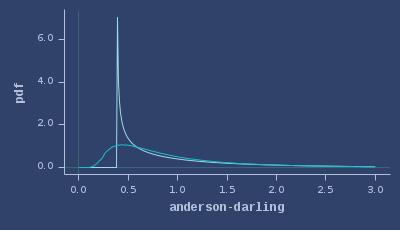PDFs of anderson-darling
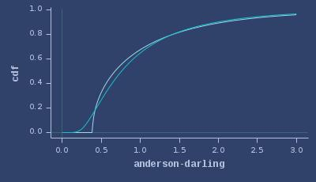CDFs of anderson-darling
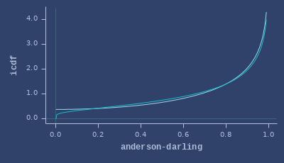ICDFs of anderson-darling
PDFs of bb

CDFs of bb

ICDFs of bb

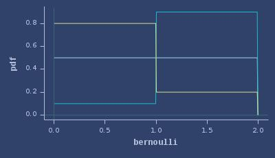PDFs of bernoulli
CDFs of bernoulli

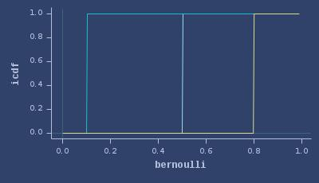ICDFs of bernoulli
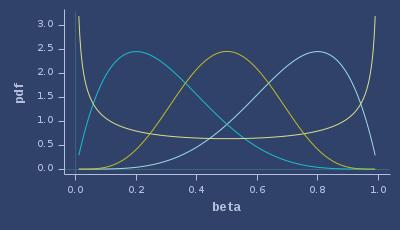PDFs of beta
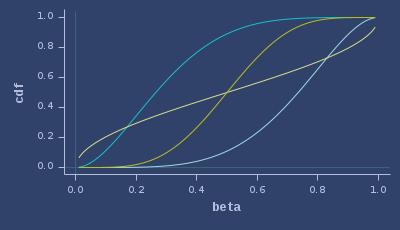CDFs of beta
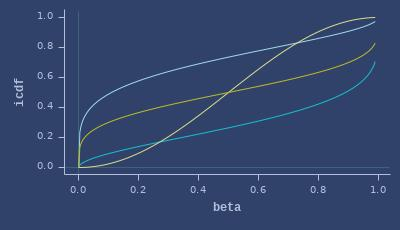ICDFs of beta
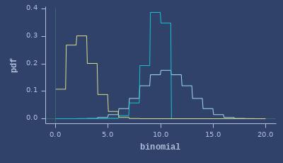PDFs of binomial
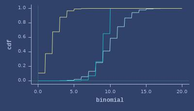CDFs of binomial
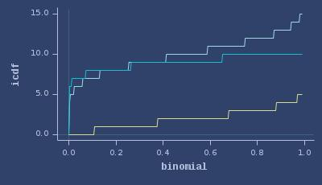ICDFs of binomial
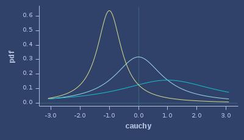PDFs of cauchy
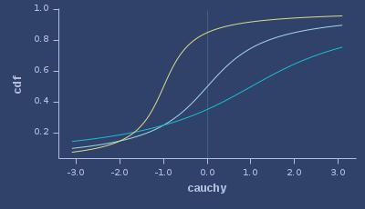CDFs of cauchy
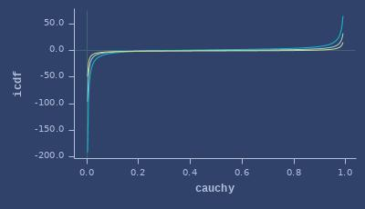ICDFs of cauchy
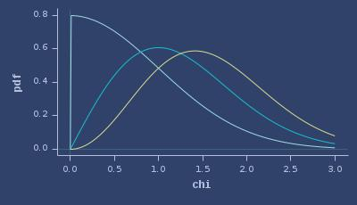PDFs of chi
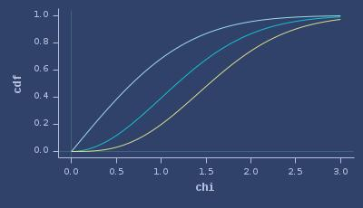CDFs of chi
ICDFs of chi

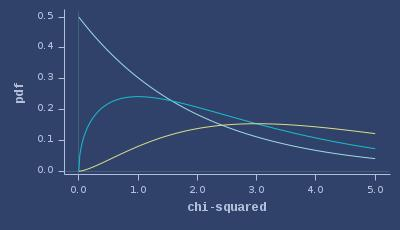PDFs of chi-squared
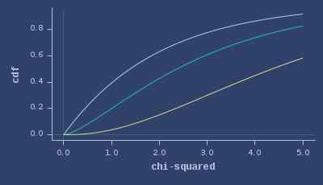CDFs of chi-squared
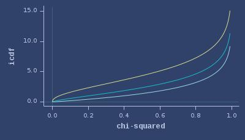ICDFs of chi-squared
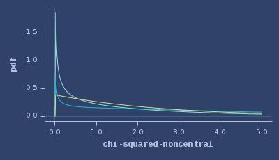PDFs of chi-squared-noncentral
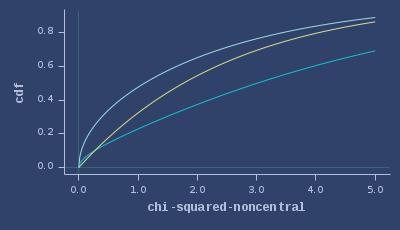CDFs of chi-squared-noncentral
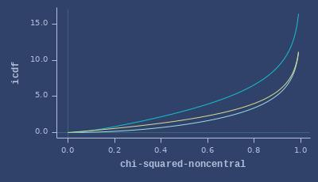ICDFs of chi-squared-noncentral
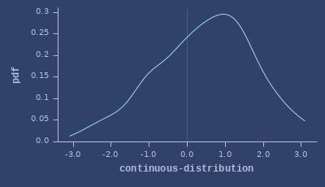PDFs of continuous-distribution
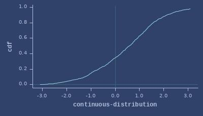CDFs of continuous-distribution
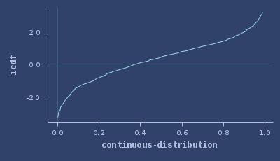ICDFs of continuous-distribution
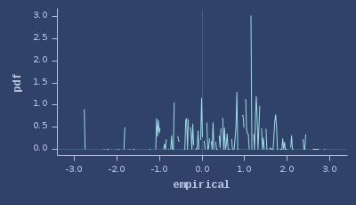PDFs of empirical
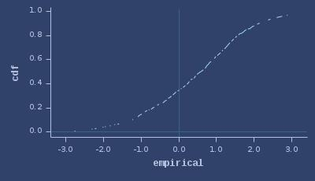CDFs of empirical
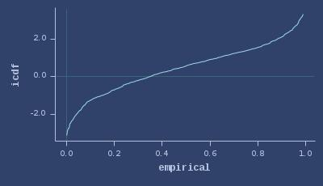ICDFs of empirical
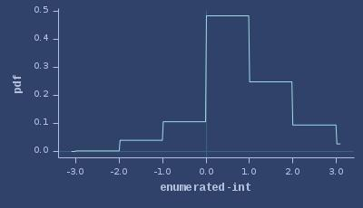PDFs of enumerated-int
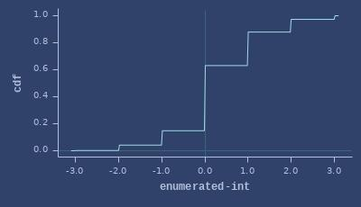CDFs of enumerated-int
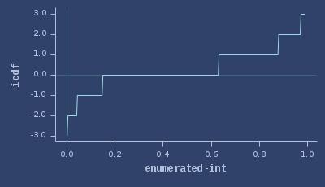ICDFs of enumerated-int
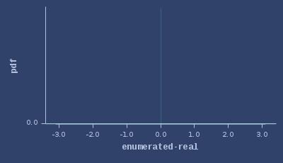PDFs of enumerated-real
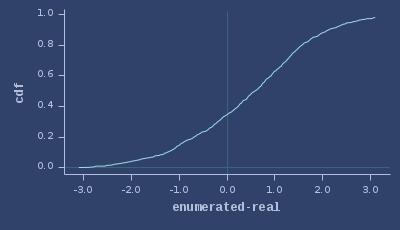CDFs of enumerated-real
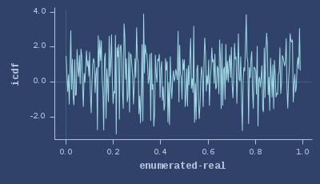ICDFs of enumerated-real
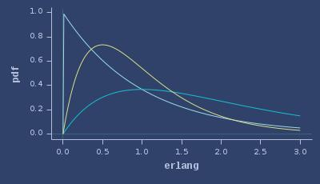PDFs of erlang
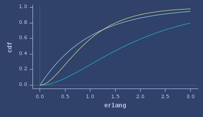CDFs of erlang
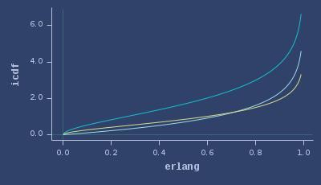ICDFs of erlang
PDFs of exgaus

CDFs of exgaus

ICDFs of exgaus

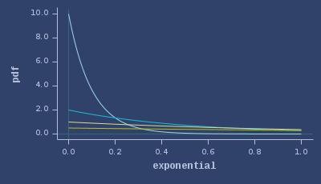PDFs of exponential
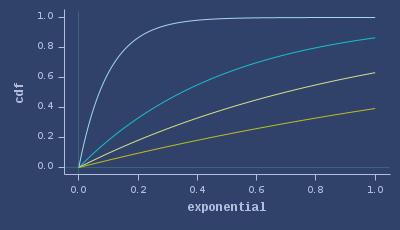CDFs of exponential
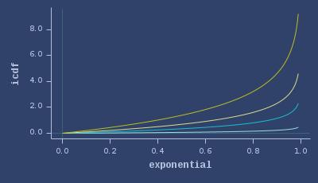ICDFs of exponential
PDFs of f

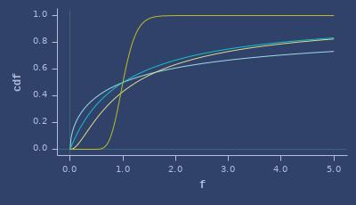CDFs of f
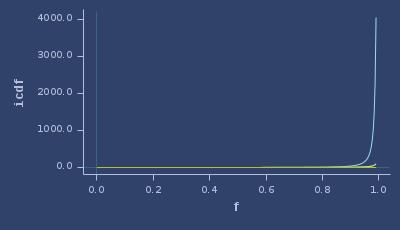ICDFs of f
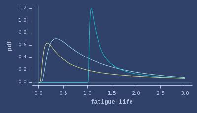PDFs of fatigue-life
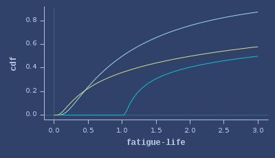CDFs of fatigue-life
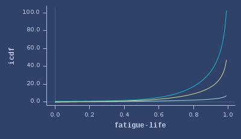ICDFs of fatigue-life
PDFs of fishers-noncentral-hypergeometric

CDFs of fishers-noncentral-hypergeometric

ICDFs of fishers-noncentral-hypergeometric

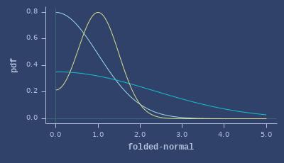PDFs of folded-normal
CDFs of folded-normal

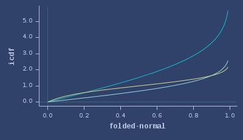ICDFs of folded-normal
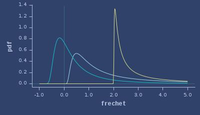PDFs of frechet
CDFs of frechet
ICDFs of frechet
PDFs of gamma
CDFs of gamma
ICDFs of gamma
PDFs of geometric
CDFs of geometric
ICDFs of geometric
PDFs of gumbel
CDFs of gumbel
ICDFs of gumbel
PDFs of half-cauchy
CDFs of half-cauchy
ICDFs of half-cauchy
PDFs of half-normal

CDFs of half-normal

ICDFs of half-normal

PDFs of hyperbolic-secant

CDFs of hyperbolic-secant
ICDFs of hyperbolic-secant
PDFs of hypergeometric
CDFs of hypergeometric
ICDFs of hypergeometric
PDFs of hypoexponential
CDFs of hypoexponential
ICDFs of hypoexponential
PDFs of hypoexponential-equal
CDFs of hypoexponential-equal
ICDFs of hypoexponential-equal
PDFs of integer-discrete-distribution
CDFs of integer-discrete-distribution
ICDFs of integer-discrete-distribution
PDFs of inverse-gamma
CDFs of inverse-gamma
ICDFs of inverse-gamma
PDFs of inverse-gaussian
CDFs of inverse-gaussian
ICDFs of inverse-gaussian
PDFs of johnson-sb
CDFs of johnson-sb
ICDFs of johnson-sb
PDFs of johnson-sl
CDFs of johnson-sl
ICDFs of johnson-sl

PDFs of johnson-su
CDFs of johnson-su
ICDFs of johnson-su

PDFs of kolmogorov

CDFs of kolmogorov

ICDFs of kolmogorov

PDFs of kolmogorov-smirnov
CDFs of kolmogorov-smirnov
ICDFs of kolmogorov-smirnov
PDFs of kolmogorov-smirnov+
CDFs of kolmogorov-smirnov+
ICDFs of kolmogorov-smirnov+

PDFs of laplace
CDFs of laplace
ICDFs of laplace
PDFs of levy
CDFs of levy
ICDFs of levy
PDFs of log-logistic
CDFs of log-logistic
ICDFs of log-logistic

PDFs of log-normal
CDFs of log-normal
ICDFs of log-normal
PDFs of logistic
CDFs of logistic
ICDFs of logistic
PDFs of mixture

CDFs of mixture

ICDFs of mixture

PDFs of multinomial

CDFs of multinomial

ICDFs of multinomial

PDFs of nakagami
CDFs of nakagami
ICDFs of nakagami
PDFs of nbi

CDFs of nbi

ICDFs of nbi

PDFs of negative-binomial
CDFs of negative-binomial
ICDFs of negative-binomial
PDFs of normal
CDFs of normal
ICDFs of normal

PDFs of pareto
CDFs of pareto
ICDFs of pareto
PDFs of pascal
CDFs of pascal
ICDFs of pascal

PDFs of pearson-6
CDFs of pearson-6
ICDFs of pearson-6
PDFs of poisson
CDFs of poisson
ICDFs of poisson
PDFs of power
CDFs of power
ICDFs of power
PDFs of rayleigh
CDFs of rayleigh
ICDFs of rayleigh
PDFs of real-discrete-distribution
CDFs of real-discrete-distribution
ICDFs of real-discrete-distribution
PDFs of reciprocal-sqrt
CDFs of reciprocal-sqrt
ICDFs of reciprocal-sqrt
PDFs of t
CDFs of t
ICDFs of t
PDFs of triangular
CDFs of triangular
ICDFs of triangular
PDFs of truncated

CDFs of truncated

ICDFs of truncated

PDFs of uniform-int
CDFs of uniform-int

ICDFs of uniform-int
PDFs of uniform-real
CDFs of uniform-real
ICDFs of uniform-real
PDFs of watson-g
CDFs of watson-g
ICDFs of watson-g
PDFs of watson-u
CDFs of watson-u
ICDFs of watson-u
PDFs of weibull
CDFs of weibull
ICDFs of weibull
PDFs of zabb

CDFs of zabb

ICDFs of zabb

PDFs of zabi

CDFs of zabi

ICDFs of zabi

PDFs of zaga

CDFs of zaga

ICDFs of zaga

PDFs of zanbi

CDFs of zanbi

ICDFs of zanbi

PDFs of zibb

CDFs of zibb

ICDFs of zibb

PDFs of zibi

CDFs of zibi

ICDFs of zibi

PDFs of zinbi

CDFs of zinbi

ICDFs of zinbi

PDFs of zip

CDFs of zip

ICDFs of zip

PDFs of zip2

CDFs of zip2

ICDFs of zip2

PDFs of zipf
CDFs of zipf
ICDFs of zipf
2d multidimensional normal (mean=0,0, covariances=I)
2d dirichlet (alpha=2,0.8)
distribution-id
(distribution-id d)Distribution identifier as keyword.
Examples
Usage
(distribution-id (distribution :gamma))
;;=> :gamma
(distribution-id default-normal)
;;=> :normal
;; Test: ok.distribution-parameters
(distribution-parameters d)(distribution-parameters d all?)Distribution highest supported value.
When all? is true, technical parameters are included, ie: :rng and :inverser-cumm-accuracy.
Examples
Usage
(distribution-parameters (distribution :gamma))
;;=> [:scale :shape]
(distribution-parameters (distribution :gamma) true)
;;=> [:rng :shape :scale :inverse-cumm-accuracy]
(distribution-parameters default-normal)
;;=> [:sd :mu]
;; Test: ok.distributions-list
List of distributions.
Examples
Number and list of distributions
distributions-list
;;=> #{:anderson-darling :bb :bernoulli :beta :binomial
;;=> :categorical-distribution :cauchy :chi :chi-squared
;;=> :chi-squared-noncentral :continuous-distribution :cramer-von-mises
;;=> :dirichlet :empirical :enumerated-int :enumerated-real :erlang :exgaus
;;=> :exponential :f :fatigue-life :fishers-noncentral-hypergeometric
;;=> :folded-normal :frechet :gamma :geometric :gumbel :half-cauchy
;;=> :half-normal :hyperbolic-secant :hypergeometric :hypoexponential
;;=> :hypoexponential-equal :integer-discrete-distribution :inverse-gamma
;;=> :inverse-gaussian :johnson-sb :johnson-sl :johnson-su :kde :kolmogorov
;;=> :kolmogorov-smirnov :kolmogorov-smirnov+ :laplace :levy :log-logistic
;;=> :log-normal :logarithmic :logistic :mixture :multi-normal :multinomial
;;=> :nakagami :nbi :negative-binomial :normal :normal-inverse-gaussian
;;=> :pareto :pascal :pearson-6 :poisson :power :rayleigh
;;=> :real-discrete-distribution :reciprocal-sqrt :t :triangular :truncated
;;=> :uniform-int :uniform-real :watson-g :watson-u :weibull :zabb :zabi
;;=> :zaga :zanbi :zibb :zibi :zinbi :zip :zip2 :zipf}
(count distributions-list)
;;=> 83drand
(drand)(drand mx)(drand mn mx)Random double number with default RNG.
As default returns random double from [0,1) range. When mx is passed, range is set to [0, mx). When mn is passed, range is set to [mn, mx).
Examples
Usage
(drand)
;;=> 0.6178882774976912
(drand 10)
;;=> 3.234654167181481
(drand 10 20)
;;=> 11.178257652282884drandom
(drandom rng)(drandom rng mx)(drandom rng mn mx)Random double number with provided RNG
Examples
double
(rngproto-snippet drandom ...)
;;=> 0.8690532195659586Double random value from distribution
(drandom (distribution :gamma))
;;=> 3.7980437804625375fbm-noise
(fbm-noise)(fbm-noise cfg__20703__auto__)Create fbm-noise function with optional configuration.
Examples
Usage
(let [n (fbm-noise {:interpolation :linear, :noise-type :value})]
(n 0.5 1.1 -1.3))
;;=> 0.414964253826279662d noise
flip
(flip p)(flip)Returns 1 with given probability, 0 otherwise
Examples
Usage
(flip)
;;=> 1
(flip 0.2)
;;=> 0
(repeatedly 10 (fn* [] (flip 0.1)))
;;=> (0 1 0 1 0 0 1 0 0 0)flipb
(flipb p)(flipb)Returns true with given probability, false otherwise
Examples
Usage
(flipb)
;;=> true
(flipb 0.2)
;;=> false
(repeatedly 10 (fn* [] (flipb 0.1)))
;;=> (false false false false false false false false false false)frand
(frand)(frand mx)(frand mn mx)Random double number with default RNG.
As default returns random float from [0,1) range. When mx is passed, range is set to [0, mx). When mn is passed, range is set to [mn, mx).
Examples
Usage
(frand)
;;=> 0.93785393
(frand 10)
;;=> 9.578358
(frand 10 20)
;;=> 15.521044frandom
(frandom rng)(frandom rng mx)(frandom rng mn mx)Random double number with provided RNG
Examples
float
(rngproto-snippet frandom ...)
;;=> 0.38781476Float random value from distribution (sample cast to
float)
(frandom (distribution :gamma))
;;=> 2.1697888grand
(grand)(grand stddev)(grand mean stddev)Random gaussian double number with default RNG.
As default returns random double from N(0,1). When std is passed, N(0,std) is used. When mean is passed, distribution is set to N(mean, std).
Examples
Usage
(grand)
;;=> -1.5236953146011685
(grand 10)
;;=> 7.944277491488467
(grand 10 20)
;;=> 8.045099200233572grandom
(grandom rng)(grandom rng stddev)(grandom rng mean stddev)Random gaussian double number with provided RNG
Examples
gaussian double
(rngproto-snippet grandom ...)
;;=> 0.08249794434126573icdf
(icdf d v)Inverse cumulative probability
Examples
Usage
(icdf (distribution :gamma) 0.5)
;;=> 3.3566939800333233integrate-pdf
(integrate-pdf pdf-func mn mx steps)(integrate-pdf pdf-func {:keys [mn mx steps interpolator min-iterations], :or {mn 0.0, mx 1.0, steps 1000, min-iterations 3, interpolator :linear}})Integrate PDF function, returns CDF and iCDF
Parameters: * pdf-func - univariate function * mn - lower bound for integration, value of pdf-func should be 0.0 at this point * mx - upper bound for integration * steps - how much subintervals to integrate (default 1000) * min-iterations - minimum iterations for RombergIntegrator (default 3) * interpolator - interpolation method between integrated points (default :spline)
Possible interpolation methods: :linear (default), :spline, :monotone or any function from fastmath.interpolation
irand
(irand)(irand mx)(irand mn mx)Random integer number with default RNG.
As default returns random integer from full integer range. When mx is passed, range is set to [0, mx). When mn is passed, range is set to [mn, mx).
Examples
Usage
(irand)
;;=> 403368085
(irand 10)
;;=> 7
(irand 10 20)
;;=> 16irandom
(irandom rng)(irandom rng mx)(irandom rng mn mx)Random integer number with provided RNG
Examples
integer
(rngproto-snippet irandom ...)
;;=> -1215083642Integer random value from distribution (sample cast to
int)
(irandom (distribution :gamma))
;;=> 6jittered-sequence-generator
(jittered-sequence-generator seq-generator dimensions)(jittered-sequence-generator seq-generator dimensions jitter)Create jittered sequence generator.
Suitable for :r2, :sobol and :halton sequences.
jitter parameter range is from 0 (no jitter) to 1 (full jitter). Default: 0.25.
See also sequence-generator.
Examples
Usage
(let [gen1 (jittered-sequence-generator :r2 2 0.5)
gen2 (jittered-sequence-generator :r2 2 0.5)]
[(first gen1) (first gen2)])
;;=> [[0.35672590506969504 0.3429804320698949]
;;=> [0.3483662837005658 0.30353072436954287]]Jittered (0.5) R2 plot (500 samples)
Jittered (0.5) Halton plot (500 samples)
Jittered (0.5) Sobol plot (500 samples)
Jittered (0.5) Sphere plot (500 samples)
Jittered (0.5) Gaussian plot (500 samples)
Jittered (0.5) Default plot (500 samples)
likelihood
(likelihood d vs)Likelihood of samples
Examples
Usage
(likelihood (distribution :gamma) [10 0.5 0.5 1 2])
;;=> 4.452548659934162E-6log-likelihood
(log-likelihood d vs)Log likelihood of samples
Examples
Usage
(log-likelihood (distribution :gamma) [10 0.5 0.5 1 2])
;;=> -12.322033893165353lower-bound
(lower-bound d)Distribution lowest supported value
Examples
Usage
(lower-bound (distribution :gamma))
;;=> 0.0
;; Test: ok.lpdf
(lpdf d v)Log density
Examples
Usage
(lpdf (distribution :gamma) 1)
;;=> -1.8862943611198908lrand
(lrand)(lrand mx)(lrand mn mx)Random long number with default RNG.
As default returns random long from full integer range. When mx is passed, range is set to [0, mx). When mn is passed, range is set to [mn, mx).
Examples
Usage
(lrand)
;;=> -6983603299110100805
(lrand 10)
;;=> 1
(lrand 10 20)
;;=> 19lrandom
(lrandom rng)(lrandom rng mx)(lrandom rng mn mx)Random long number with provided RNG
Examples
long
(rngproto-snippet lrandom ...)
;;=> 8255623744776393858Long random value from distribution (sample cast to
long)
(lrandom (distribution :gamma))
;;=> 2mean
(mean d)Distribution mean
Examples
Usage
(mean (distribution :gamma))
;;=> 4.0
;; Test: ok.means
(means d)Distribution means (for multivariate distributions)
Examples
Usage
(means (distribution :multi-normal))
;;=> [0.0 0.0]
(means (distribution :dirichlet {:alpha [2 2]}))
;;=> (0.5 0.5)
;; Test: ok.noise
(noise x)(noise x y)(noise x y z)Improved Perlin Noise.
6 octaves, quintic interpolation.
Examples
Usage
(noise 3.3)
;;=> 0.4863771428571427
(noise 3.3 1.1)
;;=> 0.5620622179961904
(noise 3.3 0.0 -0.1)
;;=> 0.50071015115174612d noise
noise-generators
List of possible noise generators as a map of names and functions.
Examples
List of names (keys)
(keys noise-generators)
;;=> (:fbm :single :billow :ridgemulti)noise-interpolations
List of possible noise interpolations as a map of names and values.
Examples
List of names (keys)
(keys noise-interpolations)
;;=> (:none :linear :hermite :quintic)noise-types
List of possible noise types as a map of names and values.
Examples
List of names (keys)
(keys noise-types)
;;=> (:value :gradient :simplex)observe
macro
(observe d vs)Log likelihood of samples. Alias for log-likelihood.
Examples
Usage
(observe (distribution :gamma) [10 0.5 0.5 1 2])
;;=> -12.322033893165353observe1
(observe1 d v)Log of probability/density of the value. Alias for lpdf.
Examples
Usage
(observe1 (distribution :gamma) 10)
;;=> -4.083709268125845(pdf d v)Density
Examples
Usage
(pdf (distribution :gamma) 1)
;;=> 0.15163266492815838
(pdf (distribution :pascal) 1)
;;=> 9.5367431640625E-6probability
(probability d v)Probability (PMF)
Examples
Usage
(probability (distribution :gamma) 1)
;;=> 0.15163266492815838
(probability (distribution :pascal) 1)
;;=> 9.5367431640625E-6random-noise-cfg
(random-noise-cfg pre-config)(random-noise-cfg)Create random noise configuration.
Optional map with fixed values.
Examples
Random configuration
(random-noise-cfg)
;;=> {:gain 0.322139923164584,
;;=> :generator :ridgemulti,
;;=> :interpolation :quintic,
;;=> :lacunarity 1.9176121136112807,
;;=> :noise-type :simplex,
;;=> :normalize? true,
;;=> :octaves 8,
;;=> :seed -475178238,
;;=> :warp-depth 1,
;;=> :warp-scale 0.0}random-noise-fn
(random-noise-fn cfg)(random-noise-fn)Create random noise function from all possible options.
Optionally provide own configuration cfg. In this case one of 4 different blending methods will be selected.
Examples
Create function
(random-noise-fn)
;;=> fastmath.random$billow_noise$fn__20721@30b2f3b5
(random-noise-fn (random-noise-cfg))
;;=> fastmath.random$fbm_noise$fn__20717@3a7933a0One
Two
Three
randval
macro
(randval v1 v2)(randval prob v1 v2)(randval prob)(randval)Return value with given probability (default 0.5)
Examples
Usage
(randval :val-one :val-two)
;;=> :val-one
(randval 0.001 :low-probability :high-probability)
;;=> :high-probabilityCheck probability of nil (should return value around 1000).
(count (filter nil?
(repeatedly 1000000 (fn* [] (randval 0.001 nil 101)))))
;;=> 952ridgedmulti-noise
(ridgedmulti-noise)(ridgedmulti-noise cfg__20703__auto__)Create ridgedmulti-noise function with optional configuration.
Examples
Usage
(let [n
(ridgedmulti-noise
{:octaves 3, :lacunarity 2.1, :gain 0.7, :noise-type :simplex})]
(n 0.5 1.1 -1.3))
;;=> 0.292065218478958942d noise
rng
multimethod
Examples
Creation
(rng :mersenne)
;;=> org.apache.commons.math3.random.MersenneTwister@98ef834
(rng :isaac 1234)
;;=> org.apache.commons.math3.random.ISAACRandom@1ac18537Usage
(irandom (rng :mersenne 999) 15 25)
;;=> 24rngs-list
List of all possible RNGs.
Examples
Contains
(sort rngs-list)
;;=> (:isaac :jdk :mersenne
;;=> :well1024a :well19937a
;;=> :well19937c :well44497a
;;=> :well44497b :well512a)sample
(sample d)Random sample
Examples
Random value from distribution
(sample (distribution :gamma))
;;=> 2.709109155416231sequence-generator
multimethod
Create Sequence generator. See sequence-generators-list for names.
Values:
:r2,:halton,:sobol,:default- range[0-1] for each dimension:gaussian- fromN(0,1)distribution:sphere- from surface of unit sphere (ie. euclidean distance from origin equals 1.0):ball- from an unit ball
Possible dimensions:
:r2- 1-15:halton- 1-40:sobol- 1-1000- the rest - 1+
See also jittered-sequence-generator.
Examples
Usage (2d)
(let [gen (sequence-generator :halton 2)] (take 5 gen))
;;=> ([0.0 0.0]
;;=> [0.5 0.6666666666666666]
;;=> [0.25 0.3333333333333333]
;;=> [0.75 0.2222222222222222]
;;=> [0.125 0.8888888888888888])Usage (1d)
(let [gen (sequence-generator :sobol 1)] (take 5 gen))
;;=> (0.0 0.5 0.75 0.25 0.375)Usage (10d)
(second (sequence-generator :halton 10))
;;=> [0.5 0.6666666666666666 0.6000000000000001 0.42857142857142855
;;=> 0.7272727272727273 0.8461538461538463 0.7058823529411764
;;=> 0.7368421052631579 0.30434782608695654 0.6206896551724138]Usage, R2 sequence
(take 5 (sequence-generator :r2 3))
;;=> ([0.3191725133961645 0.17104360670378926 0.0497004779019703]
;;=> [0.13834502679232896 0.8420872134075785 0.5994009558039406]
;;=> [0.9575175401884934 0.5131308201113678 0.1491014337059109]
;;=> [0.7766900535846579 0.18417442681515706 0.6988019116078812]
;;=> [0.5958625669808224 0.8552180335189463 0.24850238950985148])R2 plot (500 samples)
Halton plot (500 samples)
Sobol plot (500 samples)

Sphere plot (500 samples)
Gaussian plot (500 samples)
Default plot (500 samples)
sequence-generators-list
List of random sequence generator. See sequence-generator.
Examples
Generator names.
(sort sequence-generators-list)
;;=> (:ball :default :gaussian :halton :r2 :sobol :sphere)set-seed!
(set-seed!)(set-seed! v)(set-seed! rng v)Sets seed.
If rng is :smile calls smile.math.MathEx/setSeed().
Without rng sets both :smile and default-rng
Examples
Set seed for the RNG object
(let [rng (rng :isaac)]
(set-seed! rng 1234)
(irandom rng 10 15))
;;=> 10
;; Test: ok.Set seed for the distribution object
(let [d (distribution :enumerated-int {:data [1 1 1 2 3]})]
(set-seed! d 1234)
(irandom d))
;;=> 2
;; Test: ok.Set seed to SMILE (global) RNG
(set-seed! :smile 1234)
;;=> nilSet seed to both SMILE and fastmath default RNGs
(set-seed! 1234)
;;=> org.apache.commons.math3.random.JDKRandomGenerator@74b6c343Set to random seed both default RNGs
(set-seed!)
;;=> org.apache.commons.math3.random.JDKRandomGenerator@74b6c343simplex
(simplex x)(simplex x y)(simplex x y z)Simplex noise. 6 octaves.
Examples
Usage
(simplex 3.3)
;;=> 0.37317187056
(simplex 3.3 1.1)
;;=> 0.33595758451118996
(simplex 3.3 0.0 -0.1)
;;=> 0.31578680776014132d noise
single-noise
(single-noise)(single-noise cfg__20703__auto__)Create single-noise function with optional configuration.
Examples
Usage
(let [n (single-noise {:interpolation :linear})] (n 0.5 1.1 -1.3))
;;=> 0.4792d noise
source-object
(source-object d)Returns Java or proxy object from backend library (if available)
Examples
Usage
(source-object default-normal)
;;=> org.apache.commons.math3.distribution.NormalDistribution@7a4204efsynced-rng
(synced-rng m)(synced-rng m seed)Create synchronized RNG for given name and optional seed. Wraps rng method.
Examples
Usage
(drandom (synced-rng :mersenne 1234))
;;=> 0.0685985404954157upper-bound
(upper-bound d)Distribution highest supported value
Examples
Usage
(upper-bound (distribution :gamma))
;;=> Infinity
;; Test: ok.variance
(variance d)Distribution variance
Examples
Usage
(variance (distribution :gamma))
;;=> 8.0
;; Test: ok.vnoise
(vnoise x)(vnoise x y)(vnoise x y z)Value Noise.
6 octaves, Hermite interpolation (cubic, h01).
Examples
Usage
(vnoise 3.3)
;;=> 0.7118823098349076
(vnoise 3.3 1.1)
;;=> 0.6256694813199928
(vnoise 3.3 0.0 -0.1)
;;=> 0.76450394026252812d noise
warp-noise-fn
(warp-noise-fn noise scale depth)(warp-noise-fn noise scale)(warp-noise-fn noise)(warp-noise-fn)Create warp noise (see Inigo Quilez article).
Parameters:
- noise function, default: vnoise
- scale factor, default: 4.0
- depth (1 or 2), default 1
Normalization of warp noise depends on normalization of noise function.
Examples
Usage
(let [n (warp-noise-fn simplex 2.0 2.0)]
[(n 0.0) (n 1.0 0.5) (n 2 2 2)])
;;=> [0.40514091608287256 0.4384328723070078 0.6539788263760881]Default warp (noise=vnoise, scale=4.0, depth=1.0).